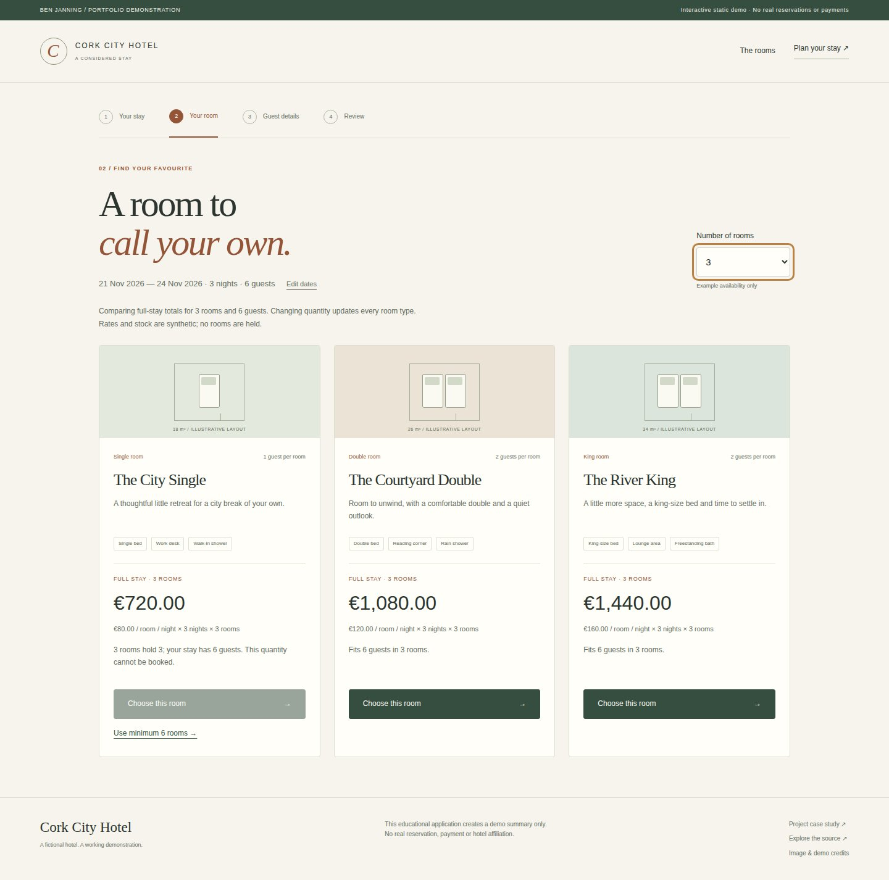
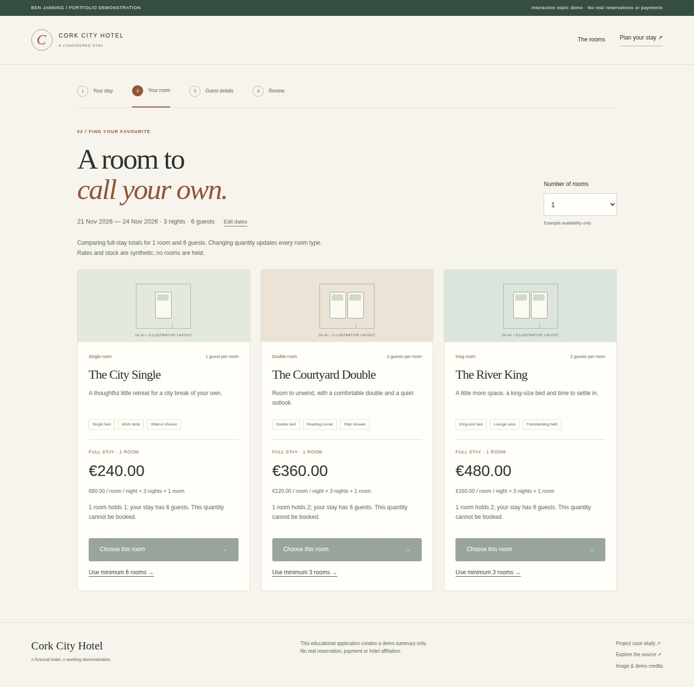
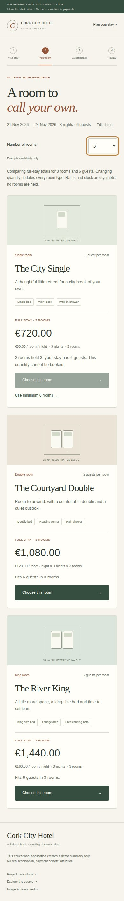
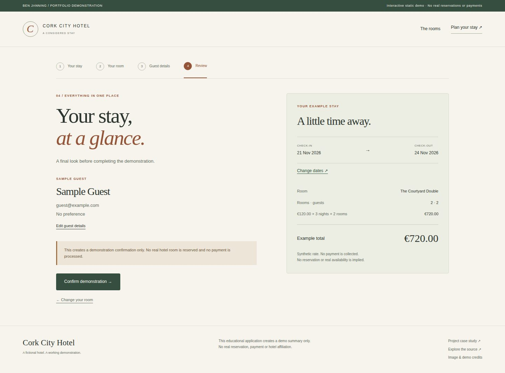
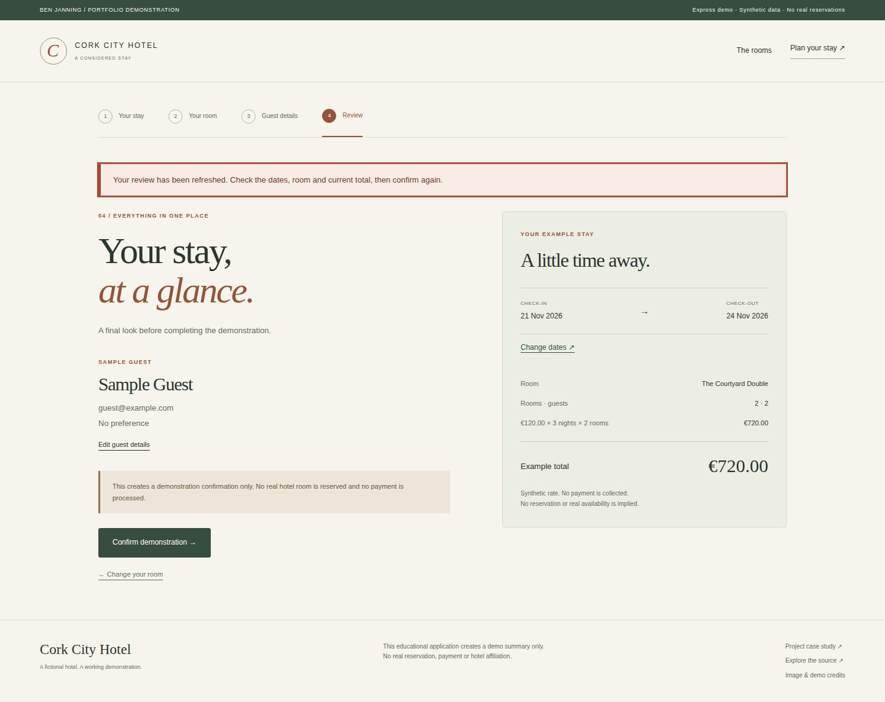

Hotel booking prototype.
Compare full-stay room costs, resolve capacity limits and complete a recoverable demonstration booking.
Public demo: browser-based static version. See source for architecture and limitations.

What I built
Extended the existing Express/static booking journey with full-stay room comparisons and explicit quantity recovery, using the same exact-cent rules that validate the final quotation.
Why it matters
A nightly price alone hides the cost of a multi-room stay. Guests also need to understand why a room type cannot accommodate their party and how to correct the selection.
How it works
- 01
Choose future dates and guest count. Compare the full stay price for each room type, with its nightly rate, nights and room quantity shown.
- 02
Use an explicit minimum-room action to resolve capacity or stock problems; every comparison updates together, while previous quotes and reviews are invalidated.
- 03
Choose a room, enter sample details and review the exact same quotation. Existing session recovery and stable confirmation retries remain available.
The technical challenge
Room cards and final quotation previously had separate eligibility calculations, and changing quantity could leave an older review reachable. One shared assessment now drives comparison and authoritative validation; one quantity-change boundary invalidates all downstream state. An invalid current quantity can show a clearly labelled price without enabling booking, and a repair is offered only when the required quantity fits example stock.
What it demonstrates
Shared business rules, exact pricing, accessible recovery from invalid selections and consistent state across a multi-step application.
Evidence, with context.
Rule/API regressions, a disposable MySQL 8.4 catalog check and nine Express/static browser journeys gate publication. A six-guest, three-night example moves explicitly from one invalid double room at EUR360 to three valid rooms at EUR1080; these are synthetic quoted amounts, not bookings or business impact. Tests reconcile every room-card total with the later quote, clear stale downstream state after quantity changes, retain sample guest details, and check keyboard/mobile use alongside the existing confirmation recovery paths.
Verified source: 6dbd749eecc8 · Tests and visual capture ↗








Scope and limitations
The hotel, rooms, prices and guest records are synthetic. Public Pages runs only the shared browser demonstration; it does not run Express or MySQL. Stock is illustrative per room type, not a date-based hotel inventory or a held allocation. Confirmations create no real reservation, payment, account or message. Review/receipt state is temporary; the bounded Express cache and local session store are educational rather than a production booking database.
Visual provenance and source attribution are recorded in the evidence register ↗.
Under the surface.
Architecture, methods and improvements
A shared pure roomOption assessment computes integer-cent totals, capacity, stock eligibility and a bounded minimum-room suggestion. makeQuote delegates to that assessment and retains its original valid quote contract and rejection messages. Both manual and suggested quantity changes clear quote/review/receipt state while retaining dates and sample guest details. The server recalculates from its own catalog. Existing CSRF, 15-minute reviews, bounded token-keyed receipts and explicit stale-review recovery remain in place.
Try it locally
Run npm ci, npm test and npm start for Express at http://127.0.0.1:3000. No database is needed by default. npm run build:demo generates the public static version. An optional isolated MySQL Docker setup and opt-in integration test are documented separately.
The portfolio is a static GitHub Pages site. Server applications run locally; the portfolio does not collect bookings, credentials or payments.